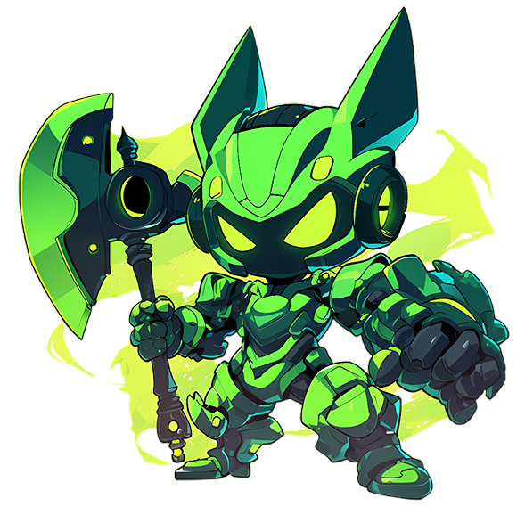
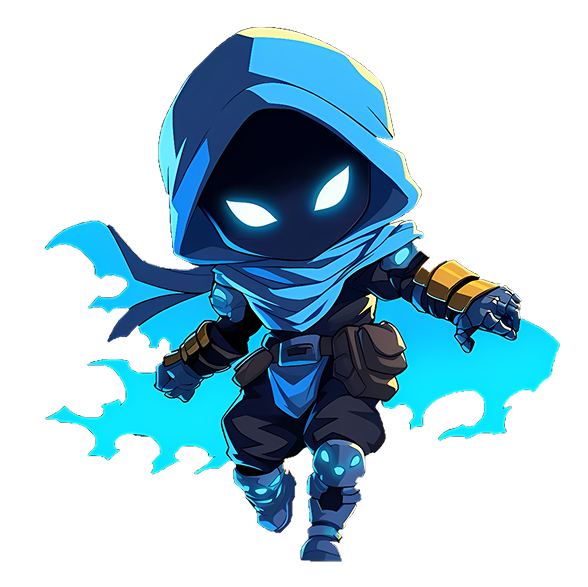
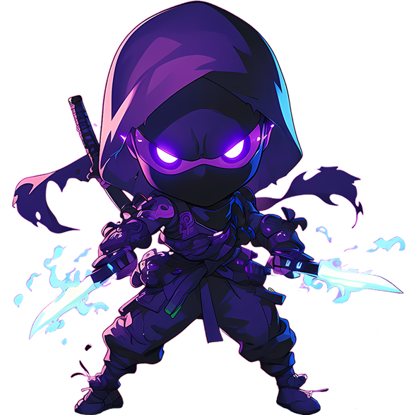
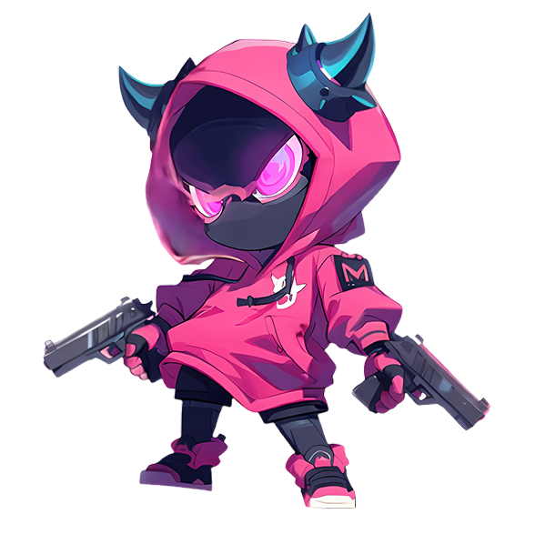
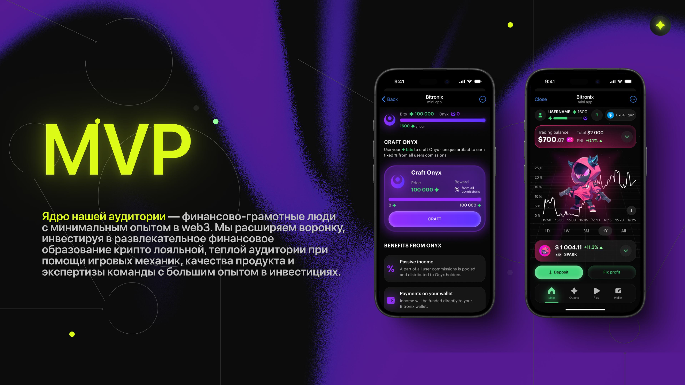
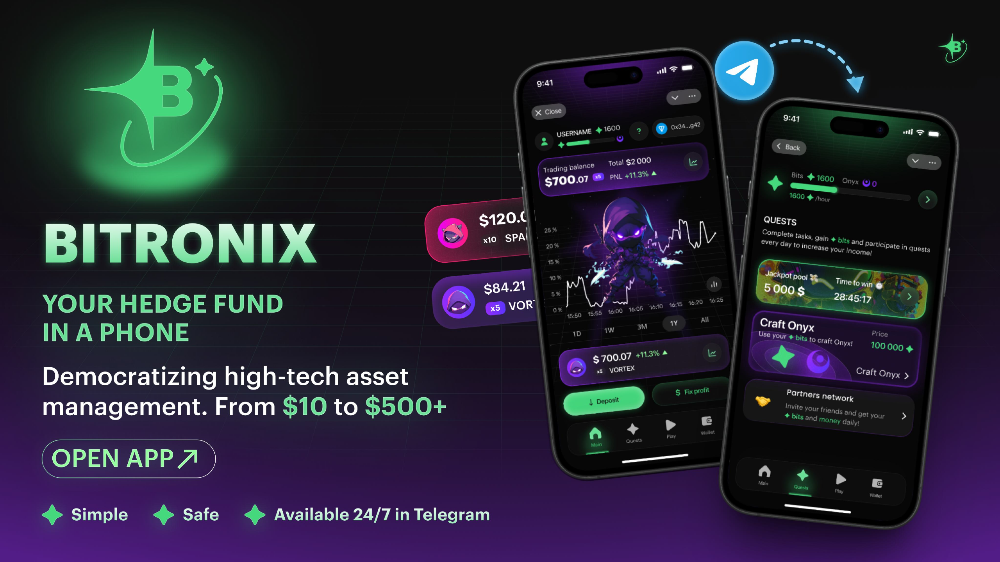
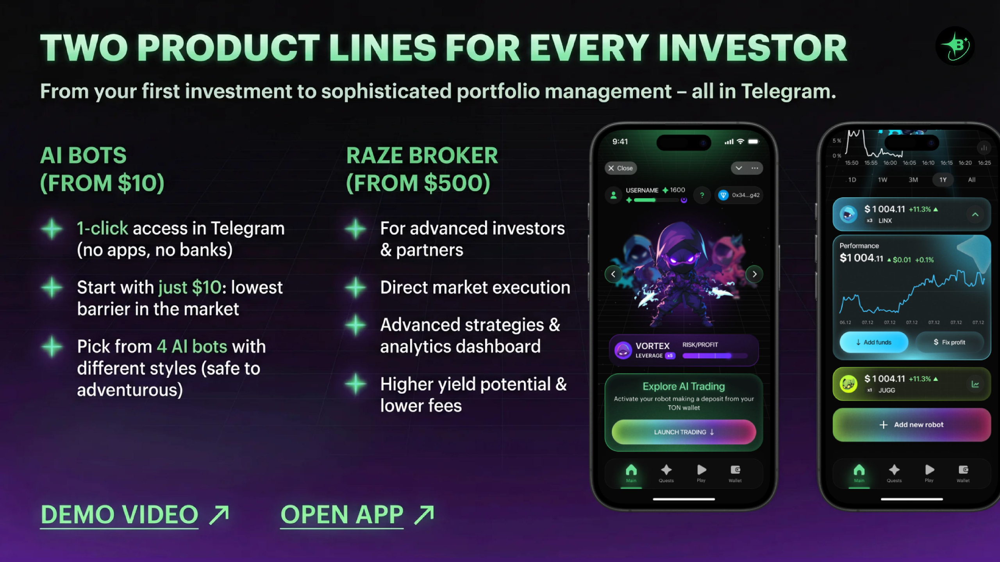
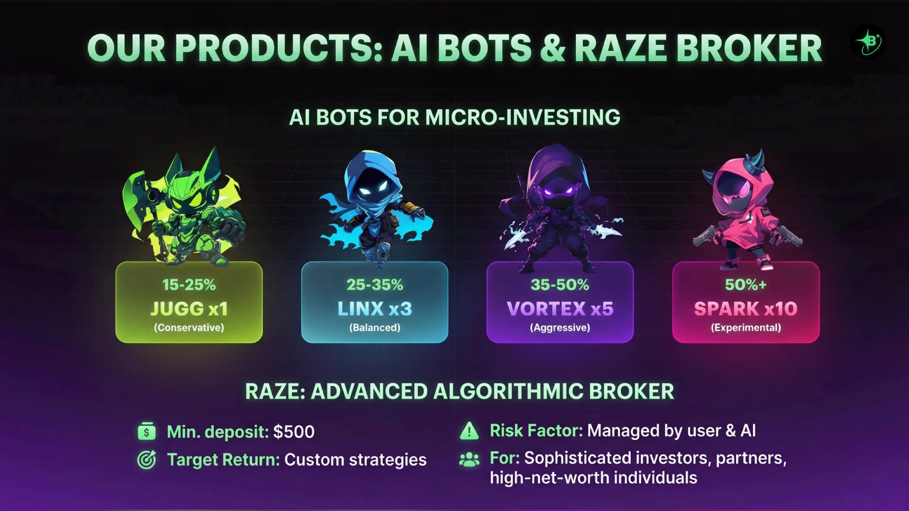
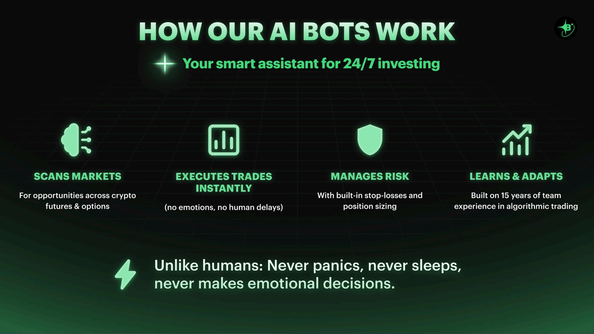

Все визуалы соцсетей
Единый узнаваемый язык для обучения, новостей, промо и контента для комьюнити.

Финтех · продукт в Telegram
Визуальная вселенная с персонажами для быстро растущего инвестиционного продукта — от ежедневного контента до моушна и продуктовой коммуникации.
Задача
Сделать инвестиционный продукт понятным, живым и узнаваемым в перегруженной ленте Telegram.
Bitronix нужна была не только рекламная графика, а производственный язык для продуктовых новостей, обучения, историй о доходности, рекламы и общения с комьюнити. Я отвечал за визуальный слой и построил систему, которая остаётся узнаваемой, как бы часто ни менялись формат и сообщение.
Персонажи




Перевод в продукт
Осторожный профиль · 15–25%
Коммуникация продукта
Тот же мир должен был объяснять, что делает продукт — а не только привлекать внимание.
Я разработал визуальную коммуникацию вокруг продукта и вместе с командой участвовал в работе над частью приложения. Презентационные и запусковые материалы связали профили роботов с депозитами, торговым поведением, риском и нативным для Telegram опытом.





Моушн
Для продуктовой коммуникации, соцсетей и рекламы было выпущено около пятидесяти моушн-роликов. Система должна была выдерживать и построение мира вокруг персонажей, и прямые перформанс-форматы.
Масштаб
Одна роль, охватившая персонажей, кампании, продукт и ежедневные публикации.
Единый узнаваемый язык для обучения, новостей, промо и контента для комьюнити.
Растущая библиотека героев, стилей и кампанийных ситуаций вместо одного статичного маскота.
Бренд-ролики, моушн для соцсетей и рекламные креативы, адаптированные под разные сообщения и аудитории.
Визуальные и отдельные продуктовые решения, принятые вместе с продуктовой командой.
Моя роль
Я превратил сложный финтех-продукт в узнаваемую визуальную вселенную.
Визуальное направление и весь слой соцсетей
Персонажи-роботы, миры кампаний и масштабируемые ассеты
Моушн-дизайн и участие в отдельных частях продукта
Следующий кейс
Every Bali↗